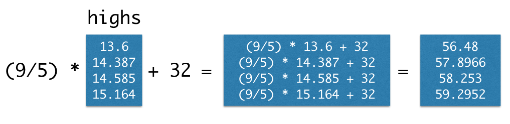

4.1. Arrays¶
While there are many kinds of collections in Python, we will work primarily with arrays in this class. We’ve already seen that the make_array function can be used to create arrays of numbers.
Arrays can also contain strings or other types of values, but a single array can only contain a single kind of data. (It usually doesn’t make sense to group together unlike data anyway.) For example:
english_parts_of_speech = make_array("noun", "pronoun", "verb", "adverb", "adjective", "conjunction", "preposition", "interjection")
english_parts_of_speech
array(['noun', 'pronoun', 'verb', 'adverb', 'adjective', 'conjunction',
'preposition', 'interjection'], dtype='<U12')
Returning to the temperature data, we create arrays of average daily high temperatures for the decades surrounding 1850, 1900, 1950, and 2000.
baseline_high = 14.48
highs = make_array(baseline_high - 0.880,
baseline_high - 0.093,
baseline_high + 0.105,
baseline_high + 0.684)
highs
array([13.6 , 14.387, 14.585, 15.164])
Arrays can be used in arithmetic expressions to compute over their contents. When an array is combined with a single number, that number is combined with each element of the array. Therefore, we can convert all of these temperatures to Fahrenheit by writing the familiar conversion formula.
(9/5) * highs + 32
array([56.48 , 57.8966, 58.253 , 59.2952])

Arrays also have methods, which are functions that operate on the array values. The mean of a collection of numbers is its average value: the sum divided by the length. Each pair of parentheses in the examples below is part of a call expression; it’s calling a function with no arguments to perform a computation on the array called highs.
highs.size
4
highs.sum()
57.736000000000004
highs.mean()
14.434000000000001
4.1.1. Functions on Arrays¶
The numpy package, abbreviated np in programs, provides Python programmers with convenient and powerful functions for creating and manipulating arrays.
import numpy as np
For example, the diff function computes the difference between each adjacent pair of elements in an array. The first element of the diff is the second element minus the first.
np.diff(highs)
array([0.787, 0.198, 0.579])
The full Numpy reference lists these functions exhaustively, but only a small subset are used commonly for data processing applications. These are grouped into different packages within np. Learning this vocabulary is an important part of learning the Python language, so refer back to this list often as you work through examples and problems.
However, you don’t need to memorize these. Use this as a reference.
Each of these functions takes an array as an argument and returns a single value.
Function |
Description |
|---|---|
|
Multiply all elements together |
|
Add all elements together |
|
Test whether all elements are true values (non-zero numbers are true) |
|
Test whether any elements are true values (non-zero numbers are true) |
|
Count the number of non-zero elements |
Each of these functions takes an array as an argument and returns an array of values.
Function |
Description |
|---|---|
|
Difference between adjacent elements |
|
Round each number to the nearest integer (whole number) |
|
A cumulative product: for each element, multiply all elements so far |
|
A cumulative sum: for each element, add all elements so far |
|
Exponentiate each element |
|
Take the natural logarithm of each element |
|
Take the square root of each element |
|
Sort the elements |
Each of these functions takes an array of strings and returns an array.
Function |
Description |
|---|---|
|
Lowercase each element |
|
Uppercase each element |
|
Remove spaces at the beginning or end of each element |
|
Whether each element is only letters (no numbers or symbols) |
|
Whether each element is only numeric (no letters) |
Each of these functions takes both an array of strings and a search string; each returns an array.
Function |
Description |
|---|---|
|
Count the number of times a search string appears among the elements of an array |
|
The position within each element that a search string is found first |
|
The position within each element that a search string is found last |
|
Whether each element starts with the search string |